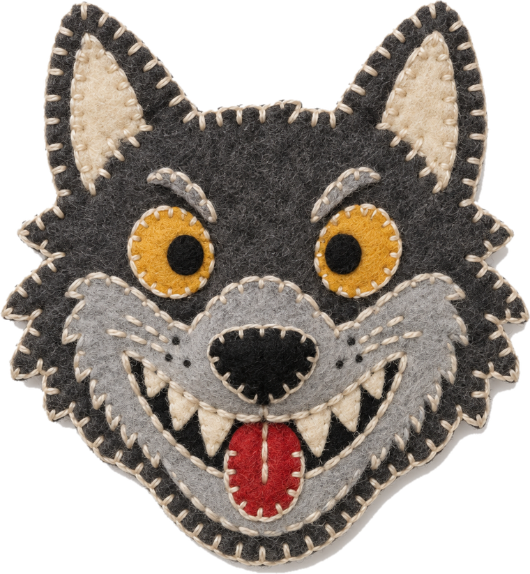

Body Double
Chapter III of VI
Your toxic trait, but make it cute
🦉Which one is really Maya?
A
i will reorganize your spice rack while you shower and call it love
🦊Jordan
🐻Sam
knew her

It was the Wolf!
🍄Priya
🐸Theo
fell for it
B
overthinking a text for 40 minutes then just sending 'k' 💀
The Wolf fooled 2 of 4.
+100 to Jordan and Sam. Maya earns +100 (+50 for each friend who knew her).
Village
Heroes
🦉Maya
300
🦊Jordan
200
🐻Sam
200